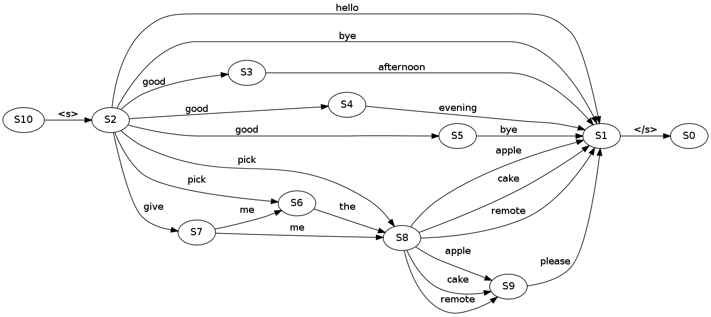

http://michaelpollmeier.com
https://github.com/mpollmeier/gremlin-scala/
Graph theory started in the 18th century
- a set of vertices
- a set of edges between vertices
Graph in computer science

compiler optimizations
Graph in Web
the WWW (hypertexts)
Engineering

pipe network analysis
Electrical engineering

circuit theory
Linguistics
language models
Biology

gene interactions
Social Networks

Relational model

Graph model
just as you would draw it
RDB: find pizzas liked by Nicola
- given a Person (Nicola)
- find Nicola (id=10) in likes table: O(log N)
- find 'Margherita' and 'Oro' in Pizza table: O(log N)
SELECT pizza.name
FROM
Person as person
JOIN Likes as likes ON person.id = likes.person
JOIN Pizza as pizza ON likes.pizza = pizza.id AND
WHERE person.id = 10
Gremlin: find pizzas liked by Nicola
- given a Person (Nicola)
- follow all likes edges: O(1)
graph.V(10).out("likes")


 https://github.com/mpollmeier/gremlin-scala
https://github.com/mpollmeier/gremlin-scala
Create vertices and edges
val graph = TinkerGraph.open.asScala
// typed keys
val Founded = Key[String]("founded")
val Distance = Key[Int]("distance")
// two vertices
val paris = graph + "Paris"
val london = graph + ("London", Founded → "43 AD")
// some edges
paris --- "OneWayRoad" --> london
paris <-- "OtherWayAround" --- london
paris <-- "Eurostar" --> london
paris --- ("Eurostar", Distance → 495) --> london
Compile time safety #1
paris.out("Eurostar").value(Founded).head //43 AD : String
paris.outE("Eurostar").value(Distance).head //495 : Int
Compile time safety #2
graph.V.outE.inV //compiles
graph.V.outE.outE //does _not_ compile
Compile time safety #3
paris.as("x")
.outE("Eurostar").as("y")
.value(Distance).as("z").select
// returns `(Vertex, Edge, Int)` for each path
For comprehensions
for {
person <- graph.V.hasLabel("person")
favorite <- person.outE("likes")
.orderBy("weight", Order.decr)
.limit(1)
.inV
} yield (person, favorite.label)
// returns (Vertex, String)
Mapping vertices from/to case classes
@label("example")
case class Example(@id id: Option[Int],
longValue: Long,
stringValue: Option[String])
val example = Example(None, Long.MaxValue, Some("optional value"))
val v: Vertex = graph + example
v.toCC[Example] // equal to `example`, but with id set
graph.V.hasLabel[Example]
 https://github.com/mpollmeier/gremlin-scala
https://github.com/mpollmeier/gremlin-scala
 https://github.com/mpollmeier/gremlin-scala-examples
https://github.com/mpollmeier/gremlin-scala-examples
Fragments
Hit the next arrow...
... to step through ...
... a fragmented slide.
Fragment Styles
There's different types of fragments, like:
grow
shrink
fade-out
current-visible
highlight-red
highlight-blue
Transition Styles
You can select from different transitions, like:
None -
Fade -
Slide -
Convex -
Concave -
Zoom
Themes
reveal.js comes with a few themes built in:
Black (default) -
White -
League -
Sky -
Beige -
Simple
Serif -
Blood -
Night -
Moon -
Solarized
Slide Backgrounds
Set data-background="#dddddd" on a slide to change the background color. All CSS color formats are supported.
Image Backgrounds
<section data-background="image.png">Tiled Backgrounds
<section data-background="image.png" data-background-repeat="repeat" data-background-size="100px">Video Backgrounds
<section data-background-video="video.mp4,video.webm">... and GIFs!
Background Transitions
Different background transitions are available via the backgroundTransition option. This one's called "zoom".
Reveal.configure({ backgroundTransition: 'zoom' })Background Transitions
You can override background transitions per-slide.
<section data-background-transition="zoom">Pretty Code
function linkify( selector ) {
if( supports3DTransforms ) {
var nodes = document.querySelectorAll( selector );
for( var i = 0, len = nodes.length; i < len; i++ ) {
var node = nodes[i];
if( !node.className ) {
node.className += ' roll';
}
}
}
}
Code syntax highlighting courtesy of highlight.js.
Marvelous List
- No order here
- Or here
- Or here
- Or here
Fantastic Ordered List
- One is smaller than...
- Two is smaller than...
- Three!
Tabular Tables
| Item | Value | Quantity |
|---|---|---|
| Apples | $1 | 7 |
| Lemonade | $2 | 18 |
| Bread | $3 | 2 |
Clever Quotes
These guys come in two forms, inline:
“The nice thing about standards is that there are so many to choose from”
and block:
“For years there has been a theory that millions of monkeys typing at random on millions of typewriters would reproduce the entire works of Shakespeare. The Internet has proven this theory to be untrue.”
Intergalactic Interconnections
You can link between slides internally, like this.
Speaker View
There's a speaker view. It includes a timer, preview of the upcoming slide as well as your speaker notes.
Press the S key to try it out.
Export to PDF
Presentations can be exported to PDF, here's an example:
Global State
Set data-state="something" on a slide and "something"
will be added as a class to the document element when the slide is open. This lets you
apply broader style changes, like switching the page background.
State Events
Additionally custom events can be triggered on a per slide basis by binding to the data-state name.
Reveal.addEventListener( 'customevent', function() {
console.log( '"customevent" has fired' );
} );
Take a Moment
Press B or . on your keyboard to pause the presentation. This is helpful when you're on stage and want to take distracting slides off the screen.
Much more
- Right-to-left support
- Extensive JavaScript API
- Auto-progression
- Parallax backgrounds
- Custom keyboard bindings